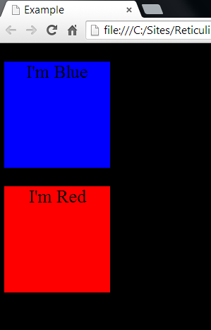
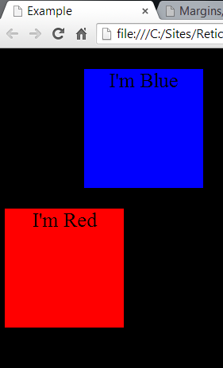

So first off, we will start with margins! Now margins are very simple to understand and anybody who has used "Microsoft Word" may know what margins are. When looking at a web page all we see is a bunch of content inside our browser. The browser acts like a container that holds all the content. Here are 2 colored boxes inside a browser

As you saw in the previous picture, the boxes were hugging the left side of the screen. That is the default location for content when margins aren't specified, but by being specific, we can actually move the boxes to where we want them to be on the page or container they are in. I'm going to move the blue box a bit to the right using the syntax in css "margin-left:100px". By doing this command, it will put 100 pixels worth of space between the box and the left side of the browser.
